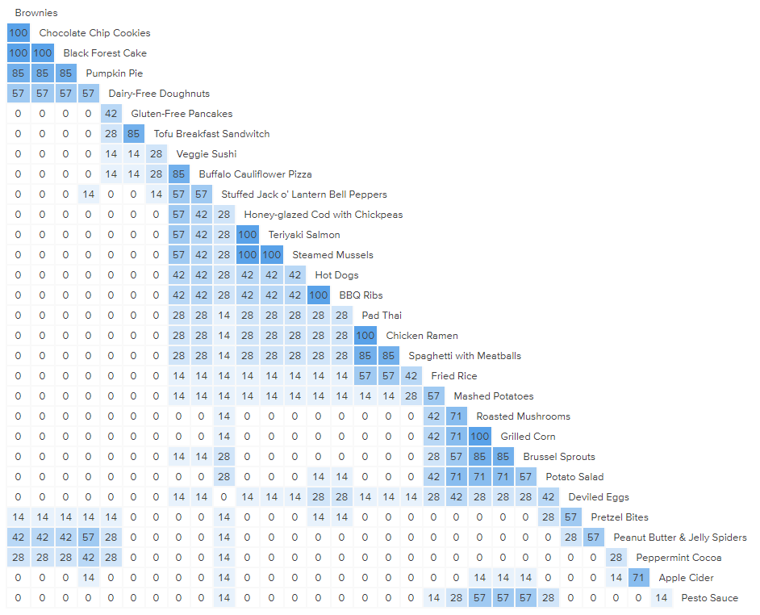
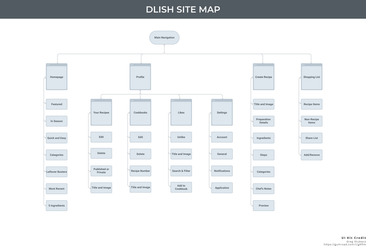
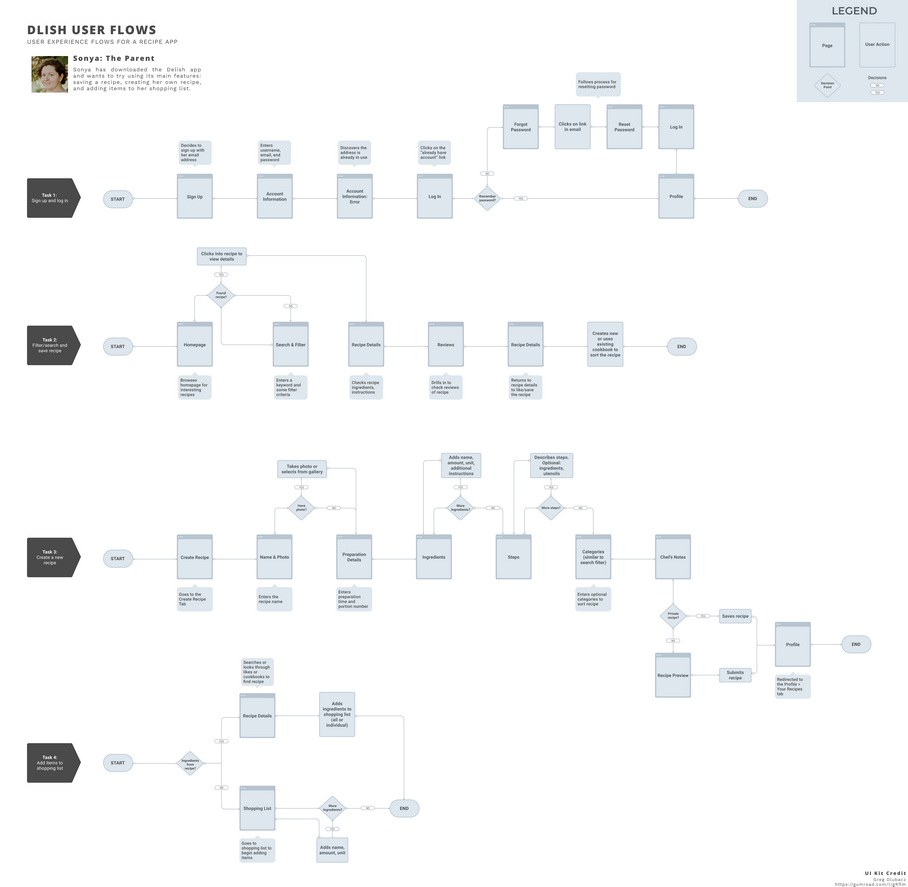

Role
UX/UI Designer
Timeline
2 weeks
Project type
Case study
In this conceptual exploration, I wanted to design a mobile food app which allows users to find, share, and develop their own recipes.
To make sure the project was comprehensive and kept user goals at the forefront, I designed the app from the bottom up: conducting research, wireframing, branding, and prototyping.
The Process

01. Research

The research for this project was divided into secondary and primary parts. I was excited to learn more from potential users about what makes cooking interesting and fun so I could highlight these aspects in my design.
There were plenty of competitors in the world of food apps that I could use to start understanding the industry. I was able to parse out some common patterns as well as variations between each app; very handy to start fleshing out the core functionality as well as areas where a different approach would work better for what Dlish had in mind.
Card Sort
I conducted a card sort exercise to better understand how people categorize foods. I included a range of food and drink items to give participants every opportunity to create sections that made the most sense to them.
Participants created an average of 8 categories for 30 cards, and all participants had at least one course category such as Breakfast or Dessert. Categories based on ingredients, such as Seafood and Noodles, were also common.
Dietary restrictions had multiple categories, such as Vegetarian, Food Allergies, Sensitivities, and Gluten and Dairy Free. Only one participant mentioned Holiday as a category, while a couple of others simply sorted items into Misc or Other.
Similarity Matrix
Interview Findings
Key Takeaways
Simple and straightforward interfaces.
Being able to search by ingredients, diet, course, or a combination.
Some users prefer simple recipes, while others like interesting recommendations and trying new techniques and ingredients.
Some users shop based on recipes, while others find recipes based on staple foods they have in the fridge.
Pain Points
Cluttered or complex home screens are overwhelming.
Hard to organize and search recipes.
Lack of options for restricted diets (vegan, allergies, sensitivities).
Videos which aren’t muted or play automatically.
Misleading recipes, lack of explanation for techniques or pitfalls.
Research Synthesis
Fleshing out the IA in the site map and creating a user flow helped me solidify the features I want to include and how users might access them as they browse the app.
I created two personas as a way to see similarities and differences between users at a glance. Some users are more experienced and tend to stick with familiar recipes unless it’s a special occasion, while others are just starting to explore cooking and rely more on finding new recipes.
Competitor Analysis

Site Map
Personas
User Flow
02. Design

It was a lot of fun working on the design of this app. Because each screen had distinct functions, choosing the best design patterns for the job was crucial. I wanted the app to be straightforward in its use, and make sure that the images of food were front and centre, not competing with the design.
Sketches
Designing an app from scratch can be pretty daunting. I created pages and pages of sketches: variations on each screen, playing with hierarchy, trying out different design patterns. Below are a couple of examples of my thought process.
Wireframes
Creating wireframes is a great time to put ideas into practice. While not all functions are included here, iterating on these let me make sure that elements were properly spaced, with enough tap areas for smaller items.
The card sorting from my research told me that I should allow users to include or exclude specific ingredients. While filtering by diet is useful, it doesn’t cover all possible food restrictions users or ones they’re cooking for may have.
Design Patterns
Food brands typically lean towards warmer colours - edible items occur in nature as red and orange more often than blue or purple. I wanted to capitalize on the strength of warm hues while still distinguishing the Dlish brand from its competitors, which mostly used orange and yellow.
I ended up going with a calm red as the logo and brand colour, building out a palette to use in my icons from there.
Logo Brainstorming
Final Logo
Icons
UI Kit
High Fidelity Mockups
The high-fidelity mockups let me review whether each screen made sense and that all functionality that I wanted to include is available. Some key differences were adding a way to search and sort liked recipes, a ratings system, and cleaning up button styles.
I made sure to use the brand colour sparingly; red is a powerful attention-grabber, and I wanted to reserve that for a few key elements that truly needed that pop.

03. Testing
During the course of developing the prototype, I discovered that some text was tough to read because of its size. While I wanted to go for a clean and modern look, that kind of minimalism wasn’t what I had in mind.
I overhauled much of the UI in order to make sure that the smallest font was no less than 16px in size. This made a huge positive impact on the overall accessibility of the app.
Updated Prototype
Usability Testing
Because the app had a large variety of functions, I wanted participants to be able to use each at least once. Users were tasked with the following:
- Viewing recipe details and reviews
- Adding and removing items in a shopping list (with and without a recipe)
- Using the search and filter function
- Liking recipes and sorting them into cookbooks
- Creating and publishing a new recipe
All of the participants were very pleased with the colour choices, iconography, and use of whitespace throughout the app. Many users pointed out the usefulness of the dietary icons in the details of a recipe, and thought the flow for creating a new recipe was complete and straightforward.
User comments about clarity and accessibility were invaluable. In particular, the choice of red with regards to quick preparation times led to negative connotations as opposed to the intended positive ones.
Since users had different priorities with regards to food preparation, as well as different levels of familiarity with recipe apps, some of the feedback didn't overlap or was contradictory between participants. Further testing with a larger group would be necessary to validate whether updates to the design are required.
Final Product
It was an interesting and rewarding challenge to design a new app from scratch. Verifying or disproving my assumptions was crucial to ensure my approach was centred on the users as opposed to an abstract list of features.
Based on the usability testing results, some of the key updates to the prototype include:
Accessibility
Darkened the lightest grey colour and modified location of smaller elements to improve legibility. Ensured modal buttons had consistent naming.
Functionality
Created a separate tab in the Shopping List to display all items. If recipes contain the same ingredients, this new tab will group the amounts.
Visuals
Updated colours and icons for elements such as ingredient selection, shopping list items, adding to cookbooks to ensure clarity of function.


{kind=link}
{kind=link}
{kind=link}
{kind=link}
{kind=link}
{kind=link}
{kind=link}
{kind=link}
{kind=link}
{kind=link}
{kind=link}
{kind=link}
{kind=link}
{kind=link}
{kind=link}
{kind=link}
{kind=link}
{kind=link}
{kind=link}
{kind=link}
{kind=link}
{kind=link}
{kind=link}
{kind=link}
{kind=link}
{kind=link}
{kind=link}
{kind=link}
{kind=link}
{kind=link}
{kind=link}
{kind=link}
{kind=link}